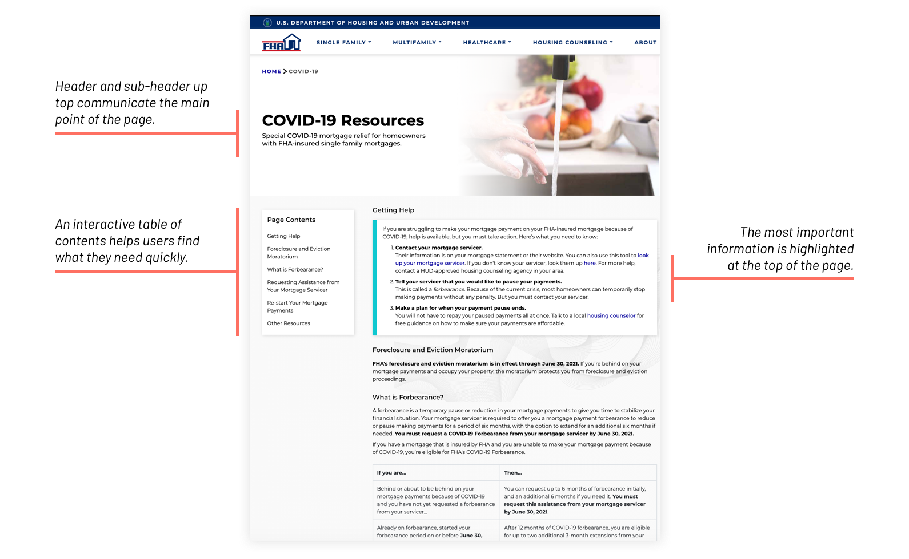
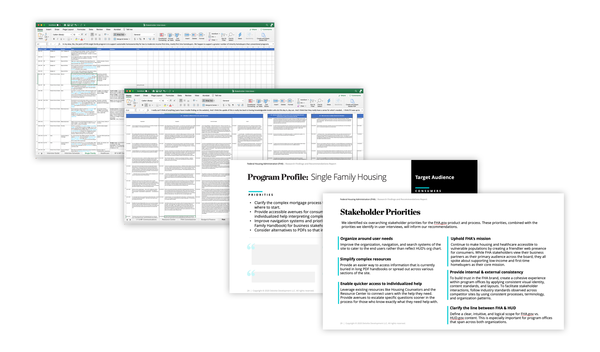

<!DOCTYPE html>
<html lang="en">

<head>
	<title>Emily Porat | FHA Website Redesign</title>
	<link rel="stylesheet" type="text/css" href="styles/global.css">
	<link rel="stylesheet" type="text/css" href="styles/global-mobile.css">
	<link rel="stylesheet" type="text/css" href="styles/nav.css">
	<link rel="stylesheet" type="text/css" href="styles/projects.css">
	<script src="https://ajax.googleapis.com/ajax/libs/jquery/1.9.1/jquery.min.js"></script>
	<link rel="icon" type="image/x-icon" href="pics/favicon.svg"/>
	<!-- Icons -->
	<script defer src="https://use.fontawesome.com/releases/v5.13.0/js/all.js"></script>
	<script defer src="https://use.fontawesome.com/releases/v5.13.0/js/v4-shims.js"></script>
	<!-- Global site tag (gtag.js) - Google Analytics -->
	<script async src="https://www.googletagmanager.com/gtag/js?id=UA-119412150-1"></script>
	<script>
		window.dataLayer = window.dataLayer || [];
		function gtag(){dataLayer.push(arguments);}
		gtag('js', new Date());

		gtag('config', 'UA-119412150-1');

      // load other reused files
      $(function() {
      	$('#nav').load('http://emilyporat.com/nav.html');
      	$('#footer').load('http://emilyporat.com/footer.html');
      });
  </script>
</head>

</html>
<body class="preload">
	<meta name="viewport" content="width=device-width">
	<div id="nav"></div>
	<div id="arrow-up" onclick="slideUp()"><i class="fa fa-angle-up"></i></div>	

	<div id="modal_background">
		<div id="prompt" class="pw_prompt">
			<h3>FHA Website Redesign</h3>
			<p>👋 Hey there! I can't talk about this project publicly, so shoot me an <a href="mailto:emporat@gmail.com" target="_blank">email</a> if you'd like to learn more.</p>
			<label>Password:</label>
			<input id="pw_prompt_input1" type="password"></input>
			<button onclick="checkPassword()">Submit</button>
		</div>
	</div>

	<div class="full-width" style="background-color: var(--pink);">
		<div class="title-wrapper animate-reveal animate-first">
			<div class="title">
				<div>
					<h4>2020 - 2021 • Deloitte Digital</h4>
					<h1 style="color: black">FHA Website Redesign</h1>
				</div>
			</div>
		</div>

		
	</div>

	<div class="panel context">
		<div class="context-summary">
			<h2>Context</h2>
			<h3>
				I co-led the redesign and launch of fha.gov, the Federal Housing Administration’s consumer-facing site, which serves over 8 million single family homeowners. 
			</h3>
			<div class="short-divider"></div>
			<p>	
				The Federal Housing Administration, part of the larger Department of Housing and Urban Development, engaged Deloitte to build a standalone FHA.gov site. Their primary audience is first-time homebuyers interested in an FHA-insured mortgage, which allows folks to put as little as 3.5% down on the purchase of a single family home. 	
			</p>
			<p>
				We began by deploying a cleaned-up ‘front door’ with a few key content pages. Next, we conducted in-depth research, including a heuristic evaluation and stakeholder interviews. Finally, we rebuilt the site from the ground up: we defined a new IA, created the main content templates, and refined the custom design system that I built during phase I.
			</p>
			<p><em style="font-weight: 900">5 min read time</em></p>
		</div>

		<div class="context-specifics">
			<h4>Length</h4>
			<div class="context-description"><p>9 months</p></div>
			<h4>Team</h4>
			<div class="context-description"><p>I co-lead research & design for a team of 12.</p></div>
			<h4>Skills</h4> 
			<div class="context-description"><p>Heuristic Evaluation, User Interview, Usability Testing, Affinity Mapping, Wireframing, Prototyping, Style & Brand Development</p></div>
			<h4>Tools</h4><div class="context-description"><p>Sketch, InVision, Abstract, Excel</p></div>
		</div>
	</div>

	<div class="full-width-mid-page">
		<div class="panel dark" style="background-color: var(--mediumgray)">
			<h2 style="padding-top: 5%;">Where we started</h2>
			<h3 style="padding-left: 15%; padding-right: 15%">All of FHA’s content was housed (no pun intended) within the Housing section of HUD.gov, their parent agency’s site. Part I of the project was launching fha.gov as a standalone site.</h3>
			
		</div>
	</div>

<!-- 	<div class="panel" id="summary">
		<h2 class="body right">Branding Refresh</h2>
			<div class="body right">
				<p>When it came to branding and style for the new FHA.gov, we had a couple of options. Another Deloitte team had already conducted a branding workshop and developed mood boards and social media guidance for FHA Catalyst, one of FHA's ongoing technology modernization initiatives, so I developed two style guides (see below): one with the original HUD branding, refreshed, and one with the FHA Catalyst branding, adapted from existing mood boards.</p>

				<p>The client decided to move forward with the Catalyst branding. Given that this soft launch was meant to be a quick and light lift, we strategically selected a few key screens to redesign with the new branding, and carried over the underlying IA from the Housing portion of the HUD.gov site.</p>
			</div>
	</div>

	<div class="full-width-mid-page">
		<div class="panel dark" style="background-color: white">
			
		</div>
	</div> -->

	<div class="panel" id="summary">
		<h2 class="body right">1.0 Launch</h2>
			<div class="body right">
				<p>We launched <a target="_blank" href="http://FHA.gov">FHA.gov</a> on June 1, 2020, with a redesigned landing page, About page, Catalyst page, and COVID information page.</p>

				<p>We couldn’t do any user research, so we chose not to spend time reconstructing the IA based on assumptions. Instead, we ported over the IA from the housing section of HUD.gov and I focused on creating clean, simple page templates for three key pages. To optimize for readability and clarity, I applied:</p>
				<ul>
					<li>Clear and consistent use of headers and subheaders to facilitate content chunking.</li>
					<li>Highlight boxes to make key information easier to pick out, catering to the human tendency to scan rather than read.</li>
					<li>An interactive table of contents to provide an overview and easy page navigation so users can jump right to relevant topics.</li>
				</ul>
				
			</div>
	</div>

	<div class="panel" id="user research">
		<h2 class="body right">User Research</h2>
			<div class="body right">
				<p>With the initial branding refresh wrapped up, we turned to the research phase of the larger engagement. We took a three step approach:</p>
				<ul>
					<li>Heuristic evaluation – analyze current state of the FHA website experience </li>
					<li>Stakeholder Interviews – semi-structured conversations to understand FHA priorities</li>
					<li>User Interviews – semi-structured conversations to understand user needs and preferences, pain points, and usability issues</li>
				</ul> 

				<p>I'm going to focus on the user interviews for the sake of brevity. We conducted 23 one-on-one ethnographic interviews to assess participants’ cognitive, behavioral, and emotional approach to performing tasks with a focus on their interaction with the HUD and FHA websites.</p>
				<p>Because FHA serves such a broad array of users, we interviewed participants from a variety of user groups, including consumers and business stakeholders across the Single Family, Multifamily, and Healthcare programs. </p>
				<p>We didn't have time to go through the typical modeling exercises after Affinity Diagramming, so I pulled together user group 'profiles.' These profiles were a communication and prioritization tool. They helped guide our design decisions and helped our client understand those decisions.</p>
<!-- 				<h3>Heuristic Evaluation</h3>
				<p>Pages were selected for evaluation based on browsing data from March 1 – May 12, 2020. We chose to look at the top 11 viewed FHA-related pages on HUD.gov. We used the <a target="_blank" href="https://uitraps.com/">Tenets & Traps</a> framework to call out problem areas. Here are two key takeaways:
				<ul>
					<li>Information overload or information "under-load" - most pages are used as link farms, while other pages only have a few sentences of text.</li>
					<li>Consistent inconsistency - type, color, and UI elements are not used consistently (see below for some examples).</li>
				</ul> 
				</p>
				
				<h3>Stakeholder Interviews</h3>
				<p>Our goal was to speak with participants that represented a breadth of FHA stakeholder perspectives, so we interviewed the main FHA Program Office & Communication leads: Single Family Housing, Multifamily Housing, Healthcare, Risk, Finance & Budget. We also spoke with folks who run the FHA Resource Center, FHA's main customer service vehicle.</p>

				<div class="space"></div>
				<h4>Analysis Process</h4>
				<p>After each interview, I reviewed my notes and filled in any gaps from the video recording. I highlighted key phrases and quotes. As interviews proceeded, I started noting patterns and creating notional organizational buckets. When all the interviews were complete, I swept through all the transcripts multiple times to refine my categories and themes. Finally, I packaged these insights into a slide deck. I created in-depth case studies for each program office, which I called 'Program Profiles,' and I also summarized the key themes running through each case.</p>

				<div class="space"></div>
				<h4>Key Findings</h4>
				<ul>
					<li>Organize around user needs, not HUD's org chart (current state).</li>
					<li>Provide an easier way to access information that is currently buried in long PDF handbooks or spread out across various sections of the site.</li>
					<li>Leverage existing resources like Housing Counselors and the Resource Center to connect users with the help they need. Provide avenues to escalate specific questions sooner in the process for those who know exactly what they need help with.</li>
					<li>Continue to make housing and healthcare accessible to vulnerable populations by creating a friendlier web presence for consumers. While FHA stakeholders view their business partners as their primary audience across the board, they all spoke about supporting low-income and first-time homebuyers as their core mission.</li>
					<li>To build trust in the FHA brand, create a cohesive experience within program offices by applying consistent visual identity, content standards, and layouts. To facilitate stakeholder interactions, follow industry standards observed across competitor sites by using consistent processes, terminology, and organization patterns.</li>
					<li>Define a clear, intuitive, and logical scope for FHA.gov vs. HUD.gov content. This is especially important for program offices that span across both organizations.</li>
				</ul> -->
			</div>
	</div>

<!-- 	<div class="full-width-mid-page">
		<div class="panel dark">
			
		</div>
	</div> -->

	<div class="full-width-mid-page">
		<div class="panel medium">
			
		</div>
	</div>

<!-- 	<div class="panel" id="user interviews">
		<div class="body right">
			<h2>Translating Research Insights to Requirements</h2>
			<p>
			We pulled out sentiment statements for each user group, came up with broad solutions for each one, and marked select ideas as 'high priority.' This process was inherently bottom up and data-backed. We started with the raw quotes, grouped through affinity diagramming, and presented the groupings and solutions with the strongest supporting evidence.
			</p>
			
			<p>
			These statements would become rough blueprints for future user stories. They guided all future design work.
			</p>
		</div>
	</div> -->

	<div class="panel" id="IA">
		<div class="body right">
			<h2>Information Architecture</h2>
			<p>
			At last, it was time to turn our insights and ideas into actual designs. Our initial IA concept divided the IA into categories based on the three main user archetypes: homebuyers, homeowners, and renters. At the time, we felt that role-based taxonomy was the simplest and most logical way to break up the site.</p>

			
			
			<h3>What's the catch?</h3>
			<p>Soon enough, we realize that that taxonomy was oversimplified, and we weren’t taking into consideration the amount of crossover between those groups and the programs available to them. </p>
			<p>I did a quick analysis of all the FHA programs, and found that many of them are open to those who want to purchase or refinance (aka homebuyers and homeowners). This made the initial IA very messy: did we pick a primary and secondary audience? Put the program in both categories? There was no clean solution. </p>

			<div class="space"></div>

			<h3>Where we landed</h3>
			<p>We ultimately pivoted to a model that better served user needs (flexibility, range of experience with the homebuying process) and the reality of FHA’s program structure. </p>
			<p>In this version, two overarching categories “Resources and Support” (101 info and guidance split up by user archetype) and “Find a Program” (programs split up by end-goal) cater to the user who knows exactly what they're looking for and the user who wants to explore. </p>
			<p>When it came to design, we went for a megamenu style nav, which provides the greatest level of transparency into the site's IA and flexibility for different use cases. It also is a large target area, so it eliminates usability issues surrounding smaller dropdown menus – users are less likely to accidentally hover off the menu.</p>

			

			<p>The mobile navigation uses progressive disclosure, showing one section at a time, to minimize information overload given the smaller screen size. The example below shows the path from Resources & Support > Homebuyer Guidance.</p>

			
		</div>
	</div>

	<div class="panel" id="IA">
		<div class="body right">
			<h2>Design Process</h2>
				<p>Once we defined the IA, my teammate and I started creating the actual page designs.</p>
				<ul>
					<li>We took stock of the existing design assets (which I had originally created from scratch in about a month). We decided to use color more sparingly for a simpler feel, tweaked some of the typography styles for readability, and introduced a few new components.</li>
					<li>Since we were designing for a Drupal site, we would be delivering templates. We picked a representative slice of pages, ideated on layouts, and narrowed in on 5 distinct templates, shown above. We ultimately delivered 25 high-fidelity mockups, covering all L1 landing pages and most “Standalone Content” pages.</li>
					<li>My teammate and I put together a component-by-component documentation deck for the client. The deck includes an explanation of each component along with usage guidance and a mobile version, where applicable.  </li>
				</ul> 

			
		</div>
	</div>


	<div class="panel" id="IA">
		<div class="body right">
			<h2>Outcome</h2>
				<p>FHA ultimately decided to stick with an earlier version of Drupal, so the dev team focused on re-platforming rather than building the new templates. As of March 2021, the current fha.gov is the same as the "1.0 Launch" version. Still, as a design team, we accomplished a lot:
				</p>
				<ul>
					<li>Sorted 1000+ notes from user & stakeholder interviews</li>
					<li>Delivered 25 high-fidelity mockups</li>
					<li>Built 200+ Custom, scalable Sketch symbols from scratch</li>
				</ul> 

			<p>All in all, this project really challenged me to answer the question - "so what?" Time and time again, I learned the value of executive summaries and clear-as-day explanations of complex topics. When you spend so much time doing research, it's easy to get stuck in the weeds. But clients don't care about what's in the weeds - they care about the big picture, and what we can do to solve their problems. ✨</p>
		</div>
	</div>

	  	
  	<div id="footer"></div>
  	</meta>
  </body>

  <script src="js/general.js"></script>

</html>